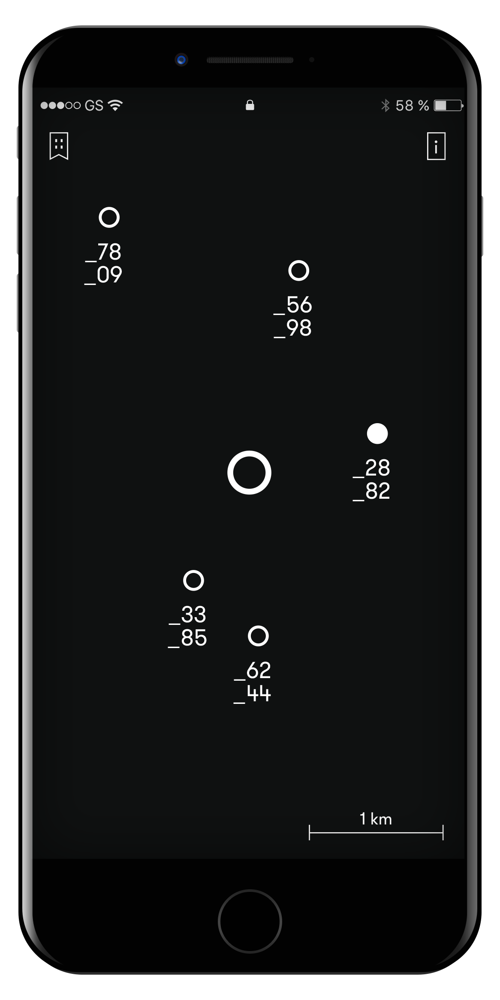
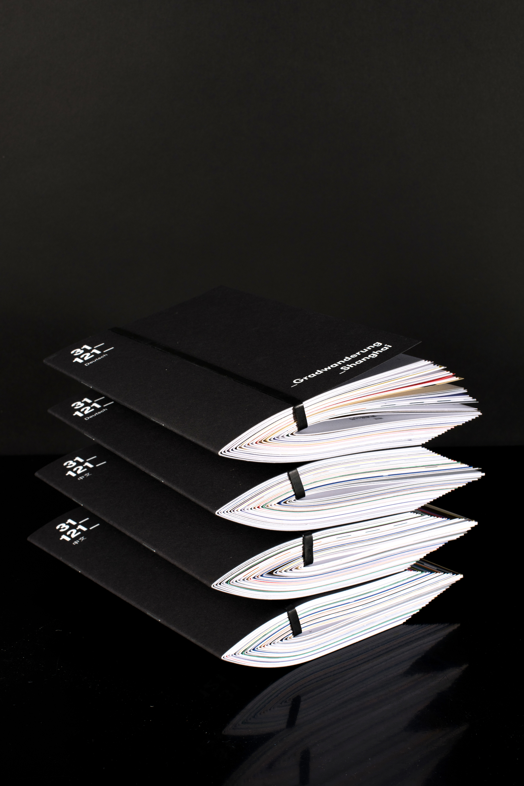

- 


- 

Gradwanderung Shanghai is an urban exploration concept dealing with cultural transition by creating a multi media guiding concept. The project was realised in collaboration with the German Consulate General Shanghai. The main idea of the concept is to enable the user to wander along German traces, culture and history and explore city of Shanghai through unconventional places, persons and narratives. The interplay of a printed publication made up of individual booklets and a digital App generates an innovative approach to explore spacial environments without superseding the physical exploration. This field of tension is contrasted by the mobile application adding a playful component. Without navigating the user precisely, the App guides the way and provides multimedia information about the sights when arriving.